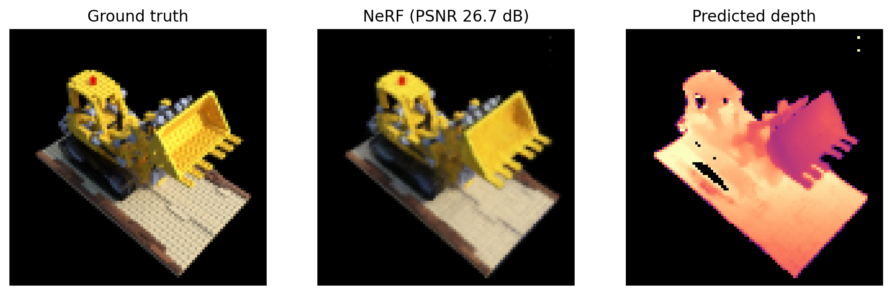
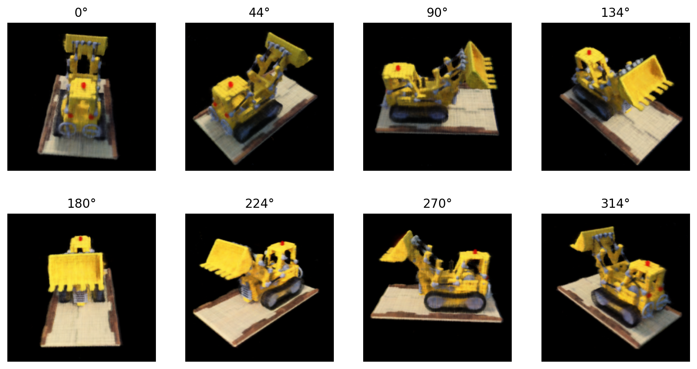

Mechanical engineer working on controls, state estimation, and reinforcement learning for robots, from drones to humanoids.
I'm a Master's student in Mechanical Engineering at Georgia Tech (B.S. in Mechanical Engineering, 2026) and a graduate lab assistant in the LIDAR Lab. I enjoy the full loop from modeling and controller design to estimation, simulation, and hardware. Previously I've worked as a controls engineering intern at Carrier and a quality engineering intern at Perryman Company.
Featured
Humanoid robots are typically trained on flat, stationary ground and struggle when the surface moves. This research trains a Unitree G1 humanoid in simulation to maintain balance on a moving platform driven by real recorded motion.
This project develops GPS-free navigation for an autonomous quadcopter by fusing inertial sensor data with camera-based gate detections through a Kalman filter. The resulting position estimates were accurate enough to fly a gate course in simulation.
Neural Radiance Fields reconstruct a 3D scene from a set of photographs and generate new views from unseen angles. I implemented the method from scratch and extended it with view-dependent color and hierarchical sampling. Reconstruction of this kind supports robot perception and mapping.
Final longer-trained model (10,000 iterations, 10 positional-encoding frequencies, 64 coarse + 128 fine samples): 26.7 dB.


More projects
The best ways to reach me are LinkedIn or bdu34@gatech.edu.